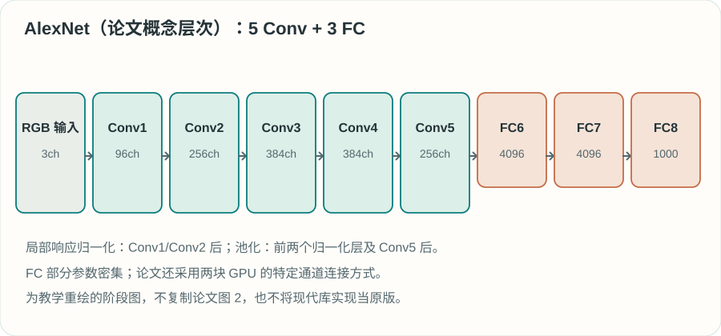
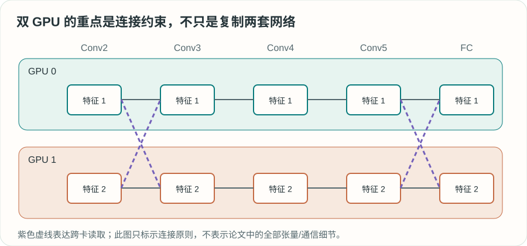
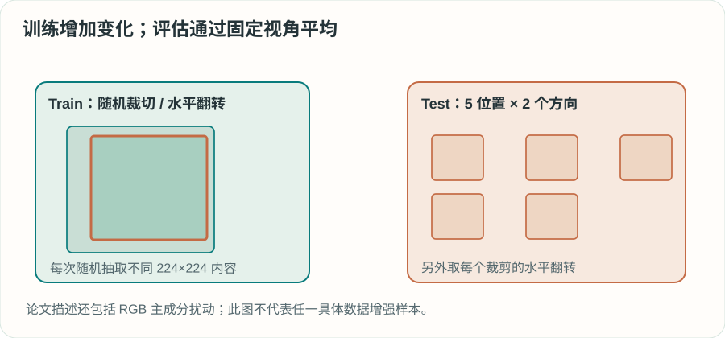

CHAPTER 08 · ALEXNET
AlexNet：大规模卷积学习如何成为现实
把 2012 年的工程现实与今日神经网络代码拆开讨论，才看得清 AlexNet 真正解决了什么、如何连接特征，以及哪些细节不能被现代复刻悄悄替换。
01 · AlexNet 改变的是大规模学习的可行性
在 ImageNet 这样类别众多、样本丰富的自然图像任务中，手工特征配合传统分类器需要人为决定何种局部表示足够稳定。AlexNet 将多层卷积、ReLU、GPU 并行、大规模数据增强与强正则化组织成能够训练的系统；关键不在于独立发明其中每一个算子，而在于组合后的规模化效果。
原论文报告其参加 ILSVRC 2012 的获胜系统在测试集上的 Top-5 error 为 15.3%，第二名为 26.2%。这里的 15.3% 对应比赛提交的系统（含模型组合），不能直接拿来当任意单个 torchvision AlexNet 权重的验证集错误率。原始论文的摘要与实验章节提供了这一比较。
02 · 为什么称它为八层网络？
“8 层”统计的是有可学习权重的 5 个卷积层与 3 个全连接层，而非将 ReLU、池化、归一化都计入深度。卷积通道数按论文叙述依次为 96 → 256 → 384 → 384 → 256，全连接层依次为 4096 → 4096 → 1000。第一卷积核 11×11、stride 4；第二层 5×5，其后三层主要为 3×3。

原论文第一卷积的输入写作 224×224×3，但图中神经元计数可对应 55×55×96 的输出；若使用无 padding 的 11×11、stride=4，224 并不能直接得到 55，而使用现代实现常见的 padding=2 可以得到 55。必须标注这处历史叙述与算术约定的差别，不能默默将 227 或 padding 值写成论文唯一说法。
无 dilation 的卷积输出尺寸：示例 H=224, K=11, S=4, P=2 时为 55。
采用 3×3、stride 2 的重叠最大池化时，55 会变为 27。计算形状时应始终写出输入布局、padding、stride 与 floor 的规则，避免仅凭示意图推断张量尺寸。
03 · 双 GPU 并不是简单的 DataParallel
2012 年 GPU 显存容量限制了网络规模。原 AlexNet 将特征图按 GPU 分配，某些卷积层只读取同卡上一层的特征图，另一些层需跨 GPU 组合特征。论文第 3.5 节特别指出：第二、第四、第五卷积采用部分组内连接；第三卷积读取第二层的所有特征；全连接层也面向全部前层神经元。这是一种结构性的连接约束，不是复制两套模型各自处理独立 batch 的数据并行。

当代 PyTorch 的 groups 参数可表达部分分组卷积关系，但仅添加 groups=2 不足以复原原论文所有通信拓扑与训练系统。读代码时需要检查具体网络定义，而不是仅检查模型名称。
04 · ReLU、LRN、重叠池化与 Dropout 各自解决什么？
ReLU 非线性在正区间不像 sigmoid 那样饱和，有助于加速优化；但负区间梯度为 0。LRN（局部响应归一化）在 2012 年设计里对同空间位置的相邻通道响应进行竞争式缩放，不能与后来广泛使用的 BatchNorm 混为一谈。重叠 max pooling 使用 3×3 窗口与 stride 2，窗口间存在重叠。Dropout 对指定训练单元随机置零，阻止某些高层特征仅依赖固定的共适应组合，推理时的行为不同。
论文报告了一些组件消融结果，但消融在特定网络和训练配方下成立；不要将“在 AlexNet 上提升了若干百分点”扩大为任何架构、数据集上的通用保证。现代 BatchNorm、AdamW 或 Mixup 也不属于 2012 年原始系统。

05 · 形状与参数的最小实验：可执行但并非整网复刻
下面使用现代 PyTorch 常见的第一层几何配置以验证 224→55→27 的整数计算。代码保留第一层输出 96 通道，但没有复原原论文中的两个 GPU、LRN、后续层和完整训练。它是 stem 单元测试，不是所谓“从零复现 AlexNet”。
import torch
from torch import nn
stem = nn.Sequential(
nn.Conv2d(3, 96, kernel_size=11, stride=4, padding=2),
nn.ReLU(),
nn.MaxPool2d(kernel_size=3, stride=2),
)
stem.eval()
with torch.inference_mode():
result = stem(torch.zeros(1, 3, 224, 224))
assert tuple(result.shape) == (1, 96, 27, 27)
conv = stem[0]
assert conv.weight.shape == (96, 3, 11, 11)
assert sum(p.numel() for p in conv.parameters()) == 96 * (3*11*11 + 1)
print("stem output:", tuple(result.shape))如果要比较代码实现，另需核查现代 torchvision.models.alexnet 的首层输出通道是 64，而不是原论文的 96；其网络结构和权重不是对当年双 GPU 程序的逐指令移植。
06 · 怎样避免把一项历史突破讲成神话？
| 容易误解的说法 | 更准确的约束 |
|---|---|
| AlexNet 发明了 CNN | 卷积网络已有更早研究；它证明了大规模数据与 GPU 训练的可行性 |
| 15.3% 就是当前 AlexNet 单模型成绩 | 论文比赛提交协议与模型组合需要单列 |
| 所有卷积都连通全部前层通道 | 原版某些层存在 GPU 通道分组连接 |
| 224/227 输出形状都无需解释 | 核大小、stride、padding 的算术必须对齐版本 |
| LRN 是 BatchNorm | 二者的统计范围与学习行为不同 |
理解自测：把 2012 原版的首层改为 torchvision 的 64 通道，还能直接使用论文参数量和特征图连接图吗？
不能。首层输出通道影响后续张量形状、参数量和双 GPU 的连接结构；必须先明确所讨论的模型版本。
一手来源与实现边界
原始结果引用论文的竞赛协议；图示是重新构造的教学图，不复制论文图 2，也不报告未经重现实验的推理准确率。